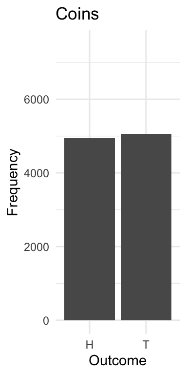

Chapter 13 Duration Models
First, I would highly recommend reading the Box-Steffensmeier and Jones book on duration models. It’s comprehensive, easy-to-digest, and targeted towards social scientists. I’ll provide a general overview, particularly of the first few chapters, though you should consult the text if you intend to use these models in your own work. Please note that I follow the terminology and formula from Box-Steffensmeier and Jones (2004) very closely, so it is advised that you use this as a supplement.
Duration models are similar in nature to count models, though with a slightly different orientation. Unlike the count models we’ve explored, typically duration models model “survival” times – the amount of time that elapses before an event ends. As the text notes, in engineering, the focus is perhaps the length of time a part lasts; in epidemiology, the focus might be on the progression of a disease – the amount of time to death; in political science, perhaps the focus is on things like the amount of time a coalition government survives, or how long before precedent is overturned, or how long a country engages in military conflict.
Durations may be purely continuous, or discrete. Indeed, a discrete process might be the number of terms a senator or congressperson serves. Or, the number of days before a piece of legislation is adopted. Discrete processes, as we’ll see, are simple extensions of a logit model. In duration models, we might include covariates that are fixed, others that vary with time. Duration models – or really the data for duration models – have properties similar to those we encountered with count data.
First, data are often right censored. If we observe units over a period of time – our data collection might occur over a one decade period – not all units will “fail.” That is, some will survive past data collection. Our data in this case is censored from the right, because we have little idea how long these units would survive had we continued to collect data. We thus are likely to encounter a fair number of suriving cases, which – while important – provide little information about the survival process.
Second, data are often left truncated. We don’t observe the history of the units prior to data collection. Say we’re measuring survival as number of years in the senate before retiring. We start data collection in 1980 and end data collection in 2022. Perhaps we no very little about those senators who are nearing the end of a long tenure shortly after 1980. We simply don’t have information about these individuals.
Third, the covariates in the data are likely to be time varying. The covariates – perhaps spending on congressional campaigns – fluctates over time.
These three characteristics of survival data – again, data which records the length of time before an “event” occurs (death, retirement, overturning precedent, peace) render OLS problematic method to model survival processes. Censoring and truncation pose serious issues in the attempt to estimate unbiased parameter estimates. Time varying processes create a source of autocorrelation, which we also know limits our ability to draw correct inferences.
13.1 Notes on Terminology
Following (Box-Steffensmeier and Jones, 2004), \(T\) is random variable denoting survival times. This variable has a probability density function and a cumulative distribution function.
The distribution of the random variable is:
\[F(T) = \int_0^t f(u)du = pr(T\leq t)\]
We’re just starting with the pdf and integrating, starting with a natural starting point, 0 and integrating over this function to some value \(T\).
All the points are differentiable, so we can go the other way and just define the pdf as
\[ f(t) = {{dF(t)}\over{d(t)}} = F'(t)\]
And,
\[f(t) = lim_{t \rightarrow} = {{F(t) + \Delta(t)- F(t)}\over{\Delta t}}\]. With some infintesimally change in time, we can estimate the unconditional failure rate. the instanteous probability that failure will occur.
This is useful to then write the survivor function, which is
\[S(t) = 1- F(t) = pr(T \geq t)\]
This is the proportion of units surviving past point \(t\). Because a failure event will not occur at time 0, but will increasingly do so as time progresses, the surivival function is strictly decreasing.
We can then use what we’ve developed to define what is known as the hazard rate
\[h(t) = {{f(t)}\over{S(t)}}\]
This is a conditional probability. It is the failure rate over the survival rate. What is the probability that a unit doesn’t survive at time \(t\) given that the unit has survived until \(t\). Or, put another way, given that a senator has served 4 terms, what is the likelihood they will serve four more terms.
13.2 The Exponential Model
Pp. 14-19 in Box-Steffensmeier and Jones is particularly useful to see the interrelated nature of these various functions. But, let’s start with a simple assumption: The hazard rate is constant.
\[h(t) = \lambda \]
It’s a positive constant. It’s flat, it doesn’t change over time. The relevant functions then are
\[S(t) = e^{-\lambda(t)}\]
And
\[f(t) = h(t) \times S(t) = \lambda(t)e^{-\lambda(t)}\]
This could be modeled using the log-linear model
\[log(T) = \beta_0 + \beta_1x_{1,i} + \beta_2x_{1,i} + \dots\]
And
\[E(t_i) = exp(\beta_0 + \beta_1x_{1,i} + \beta_2x_{1,i} + \dots\]) The hazard rate is constant, so a characteristic of this model is that changes to the hazard rate is largely built into the covariates.
The baseline hazard rate in this model is then \(exp(-\beta_0\)), when \(x_1 = 1\) the hazard rate is \(exp(-\beta_0) \times exp(-beta_1x_1) = exp(-\beta_0 - beta_1x_1)\).
Becauzse the model is “memoryless” an alternative is generally more appealing. Let’s spend a little time on the Weibull Model.
13.3 Weibull Model
\[h(t) = \lambda p(\lambda t)^{p-1}\]
This model allows for a more flexible specification of the hazard function, one that might change over time. The Weibull distribution here has a useful property in that when \(p>1\) the hazard increases, when 1 it is constant, when \(p < 1\) it decreases.
The survivor and density functions are
\[S(T) = e^{-(\lambda t)p}\]
\[f(T) = \lambda p(\lambda t)^{p-1}e^{-(\lambda t)^p}\]
The Weibull is particularly useful because we can actually model the hazards, and it gives a test of whether the hazard is truly constant over time (recall, the p parameter should be estimated as approximately 1, if the hazard is constant; otherwise, it is increasing or decreasing with time.


13.5 Graduate Productivity in Biochemistry

## [1] "art" "fem" "mar" "kid5" "phd" "ment"
Fit a PRM to the data. Notice how the standard errors are quite small.
bioChemists$female<-as.numeric(bioChemists$fem)-1
summary(glm(art~kid5, data=bioChemists,
family=poisson(link="log")))##
## Call:
## glm(formula = art ~ kid5, family = poisson(link = "log"), data = bioChemists)
##
## Coefficients:
## Estimate Std. Error z value Pr(>|z|)
## (Intercept) 0.55960 0.02988 18.728 <2e-16 ***
## kid5 -0.06978 0.03450 -2.023 0.0431 *
## ---
## Signif. codes: 0 '***' 0.001 '**' 0.01 '*' 0.05 '.' 0.1 ' ' 1
##
## (Dispersion parameter for poisson family taken to be 1)
##
## Null deviance: 1817.4 on 914 degrees of freedom
## Residual deviance: 1813.2 on 913 degrees of freedom
## AIC: 3485
##
## Number of Fisher Scoring iterations: 5Generate some prediction.
bioChemists$married<-as.numeric(bioChemists$mar)-1
summary(glm(art~female+kid5+married, data=bioChemists,
family=poisson(link="log")))##
## Call:
## glm(formula = art ~ female + kid5 + married, family = poisson(link = "log"),
## data = bioChemists)
##
## Coefficients:
## Estimate Std. Error z value Pr(>|z|)
## (Intercept) 0.63656 0.05457 11.665 < 2e-16 ***
## female -0.28549 0.05433 -5.255 1.48e-07 ***
## kid5 -0.16118 0.03934 -4.097 4.19e-05 ***
## married 0.13271 0.06092 2.179 0.0294 *
## ---
## Signif. codes: 0 '***' 0.001 '**' 0.01 '*' 0.05 '.' 0.1 ' ' 1
##
## (Dispersion parameter for poisson family taken to be 1)
##
## Null deviance: 1817.4 on 914 degrees of freedom
## Residual deviance: 1776.7 on 911 degrees of freedom
## AIC: 3452.5
##
## Number of Fisher Scoring iterations: 5a<-glm(art~female+kid5+married, data=bioChemists,
family=poisson(link="log"))
cat("Expected Articles, 4 Kid (All Variables=Min):", exp(coef(a)[1]+coef(a)[2]*max(bioChemists$female)
+coef(a)[3]*4+coef(a)[3]*min(bioChemists$married)))## Expected Articles, 4 Kid (All Variables=Min): 0.7455263##
## Call:
## glm(formula = art ~ female + kid5 + married, family = poisson(link = "log"),
## data = bioChemists)
##
## Coefficients:
## Estimate Std. Error z value Pr(>|z|)
## (Intercept) 0.63656 0.05457 11.665 < 2e-16 ***
## female -0.28549 0.05433 -5.255 1.48e-07 ***
## kid5 -0.16118 0.03934 -4.097 4.19e-05 ***
## married 0.13271 0.06092 2.179 0.0294 *
## ---
## Signif. codes: 0 '***' 0.001 '**' 0.01 '*' 0.05 '.' 0.1 ' ' 1
##
## (Dispersion parameter for poisson family taken to be 1)
##
## Null deviance: 1817.4 on 914 degrees of freedom
## Residual deviance: 1776.7 on 911 degrees of freedom
## AIC: 3452.5
##
## Number of Fisher Scoring iterations: 5##
## Call:
## glm(formula = art ~ female + kid5 + married, family = quasipoisson(link = "log"),
## data = bioChemists)
##
## Coefficients:
## Estimate Std. Error t value Pr(>|t|)
## (Intercept) 0.63656 0.07864 8.094 1.83e-15 ***
## female -0.28549 0.07830 -3.646 0.000281 ***
## kid5 -0.16118 0.05670 -2.843 0.004572 **
## married 0.13271 0.08779 1.512 0.130965
## ---
## Signif. codes: 0 '***' 0.001 '**' 0.01 '*' 0.05 '.' 0.1 ' ' 1
##
## (Dispersion parameter for quasipoisson family taken to be 2.076853)
##
## Null deviance: 1817.4 on 914 degrees of freedom
## Residual deviance: 1776.7 on 911 degrees of freedom
## AIC: NA
##
## Number of Fisher Scoring iterations: 5